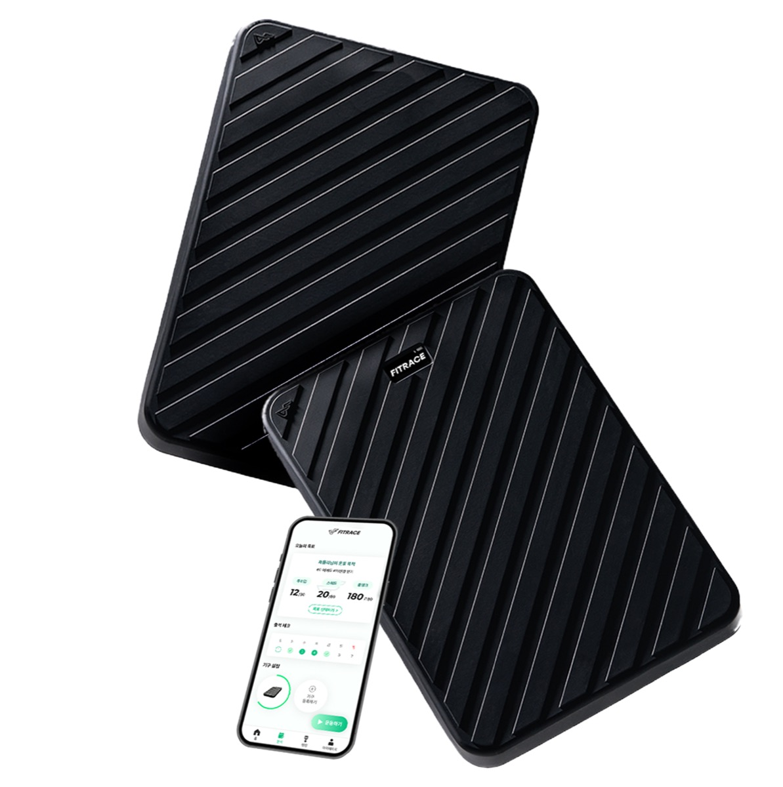
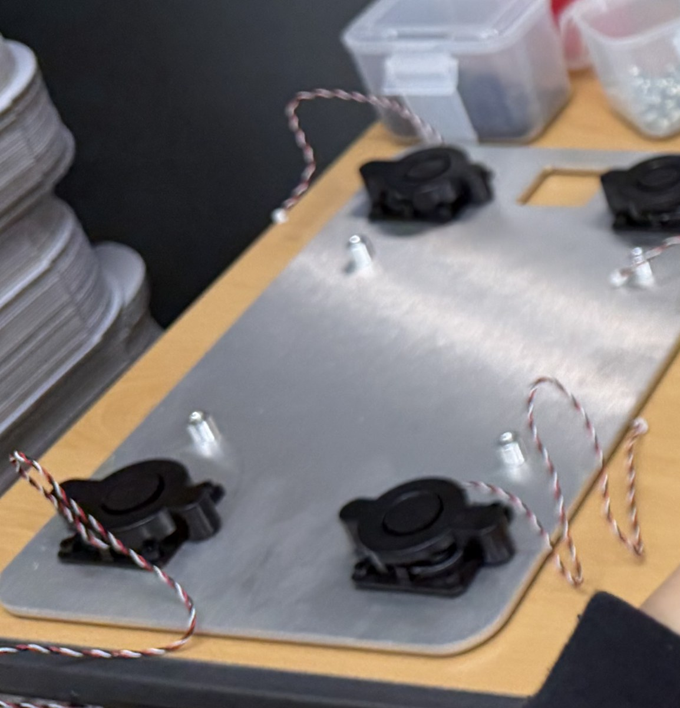
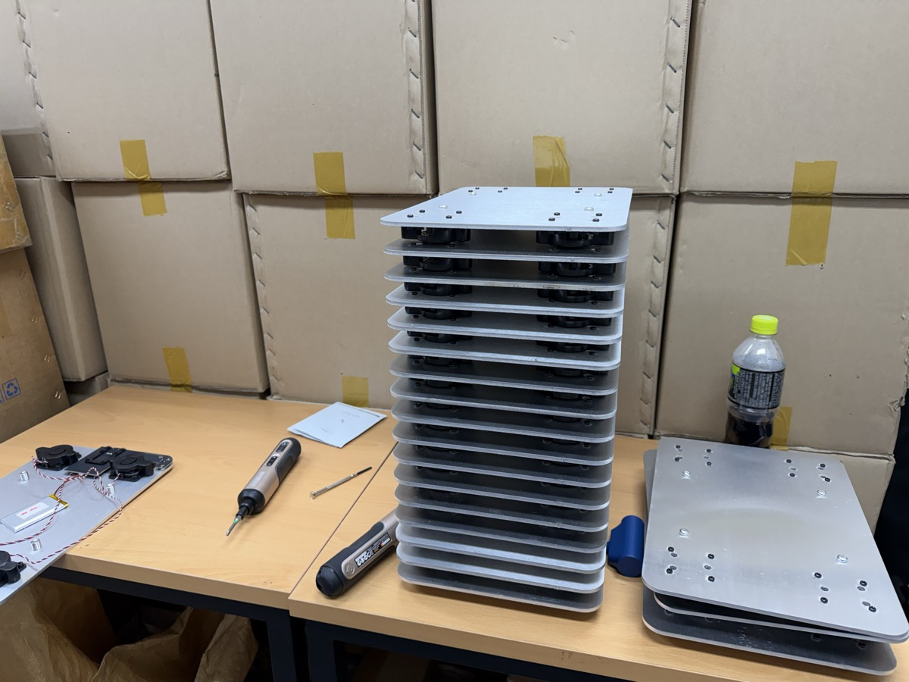

디지털 헬스케어 기기 ‘핏트레이스’ 부품 소싱 및 생산 운영
핏티 · 팀원(H/W 소싱·생산)2025.01 – 2026.01
체중과 자세 데이터를 측정하는 하드웨어 제품을 시장에 내보내는 과정에서, 부품 공급업체를 찾는 일부터 발주 방식 결정, 생산 현장 대응, 출하 후 품질 문제 처리까지 맡았습니다.

생산지 결정 — 단가가 아니라 재고 리스크로 판단
중국 대량생산은 개당 원가를 크게 낮출 수 있었지만 MOQ가 약 1만 개였습니다. 아직 시장 반응이 검증되지 않은 상태에서 발생하는 초기 재고 부담이 약 2.5억 원 수준이었습니다.
| 구분 | 개당 단가 | MOQ | 초기 재고 부담 |
|---|---|---|---|
| 중국 대량생산 | 낮음 | 약 1만 개 | 약 2.5억 원 |
| 국내 소량생산 | 높음 | 약 100대 | 제한적 |
판단 시장성이 검증되지 않은 단계에서는 단가 절감보다 재고 리스크 차단이 우선이라고 보고, 약 100대를 국내에서 생산하기로 결정했습니다.
원가 관리 — 턴키 대신 부품별 개별 발주
국내 생산은 단가가 불리했기 때문에 발주 구조로 원가를 방어했습니다. 철판, 실리콘, PCB, 로드셀 등 주요 부품의 공급업체를 개별적으로 발굴해 견적을 비교했고, 조립 일괄(턴키) 발주 대신 부품 단위로 나눠 발주해 완제품 제조원가를 약 8.8만 원 수준으로 관리했습니다. 업체 선정은 최저가만 보지 않고 단가·MOQ·납기·조립 품질을 함께 비교해 결정했습니다.


납기 대응
- 협력사 인력 부족으로 납기 지연 가능성이 생겼을 때, 생산 현장을 방문해 작업을 지원하며 일정에 대응
품질 문제 2건과 처리 방식
- 개별 부품은 모두 허용공차를 충족했으나 조립 단계에서 공차가 누적돼 결합 불량 발생 → 보강부품을 추가 제작해 조립성 개선
- 출하 후 실리콘 풋러그 접착 불량 발생 → 접착면 전처리 공정을 추가해 접착력 확보
펀딩 및 판매
- 610만 원 예산으로 매체 광고를 직접 운영하고 목표 CPA 설정
- A/B 테스트로 시장 반응을 검증하고 손익분기점 기준으로 마진 구조 설계
- 와디즈 펀딩 2개 라운드 진행, 누적 매출 1,170만 원
한계 약 100대 규모의 초기 생산이고, 양산 체계를 운영한 경험은 아닙니다. 다만 규모가 작았던 덕분에 부품 하나하나의 단가·MOQ·납기를 직접 결정하고 그 결과를 품질 문제로 되돌려 받는 과정을 전부 겪었습니다.
산업용 정밀 기어펌프 수입·영업 업무 지원
(주)아이티엔지니어링 · 아르바이트2026.03 – 2026.06
이탈리아산 산업용 정밀 기어펌프를 수입·판매하는 중소기업에서 약 3개월간 근무했습니다. 고객 사양 정리, 해외 공급업체 영문 커뮤니케이션, 선적 일정과 재고 확인을 지원했습니다.
제품 사양 및 단가 자료 관리
- 국내 고객의 구매 문의를 유체·점도·온도·토출량·압력 등 주요 운전조건별 Data Sheet로 정리
- 고객별로 제각각 들어오던 문의 사양을 일관된 양식으로 정리해 견적 및 제품 검토 업무 지원
- 기존 단가표의 가격 변경 기준을 반영해 Excel로 다수 품목 판매단가 일괄 업데이트
해외 공급업체 커뮤니케이션 및 조달 업무 지원
- 이탈리아 공급업체의 기술·주문 관련 영문 이메일을 검토·번역하고 주요 내용을 대표 및 내부 담당자에게 공유
- 대표가 작성한 국문 내용을 바탕으로 해외 발송용 영문 이메일 작성·검수 지원
- 주문·선적 일정과 변경사항을 확인해 내부 담당자에게 전달
- 담당자와 함께 제품 재고 현황 파악 및 재고 관리 지원
역할 범위 발주 의사결정이나 가격 협상을 직접 수행한 것은 아니고, 자료 확인·커뮤니케이션·일정 확인 등 발주 보조 업무를 담당했습니다. 사양서와 단가표, 해외 공급업체 납기가 실제로 어떻게 오가는지를 옆에서 확인한 경험입니다.
AI를 활용한 대학생 소개팅 서비스 ‘GITTY’ 1인 기획·개발·운영
개인 프로젝트 · 기여도 100%2026.03 – 2026.08
학교 이메일(.ac.kr) 인증을 거친 대학생만 이용할 수 있고, 사진 없이 AI가 매주 한 명을 매칭해 주는 웹서비스입니다. 비개발자로서 AI 도구를 활용해 기획부터 개발, 운영까지 혼자 진행했습니다.

외부 솔루션 비교·선정과 비용 관리
구매 관점에서 의미가 있었던 부분은 운영에 필요한 외부 솔루션을 직접 고르고 비용을 관리한 경험입니다.
- 클라우드 DB·호스팅·SMS 발송·PG 결제·AI API를 항목별로 비교·선정하고, 사용량 기반 과금 구조를 분석해 도입
- API 호출 최소화·캐싱·무료 티어 활용으로 고정비 절감
- 유료 광고 대신 자체 콘텐츠(인스타그램 누적 조회 100만+)로 유입을 전환해 획득단가(CAC) 개선
- 실제 사용자 데이터로 매칭 알고리즘을 튜닝해 여성 수락률 39% → 56% 개선(2주 연속 검증)
퍼스타트 — 초기 스타트업 팀빌딩 플랫폼 및 오프라인 모임 운영
개인 프로젝트 · 기여도 100%2021.01 – 2023.12
- 개발자 없이 노코드 툴로 플랫폼을 직접 구축·운영
- 마케팅 예산 없이 구글 SEO 최적화만으로 오가닉 트래픽 확보
- ‘성공/실패 스타트업 분석 모임’을 참가비 5만 원 유료 프로그램으로 설계해 5회 개최(기수당 평균 10명)
- 프로그램 구성, 장소 섭외, 참가자 관리 등 운영 프로세스 전반 담당
- 광고 기반 수익모델의 한계를 확인하고 모임 지속성 문제로 일시 중단
- 2023년 예비창업패키지에 지원(미선정). 사업계획서·피칭 자료를 만들며 시장성과 고객을 구체적으로 검토
학부 설계 프로젝트
국민대학교 기계공학과
차량용 반려동물 안전 커넬 (캡스톤 디자인, 2024.03 – 2024.06 · 담당: H/W 제작 및 ISOFIX 결합부)
시판 제품 대부분이 벨크로나 안전벨트 결속에 그친다는 점을 확인하고, 유아용 카시트의 안전 기준을 반려동물용으로 재설계했습니다. 이탈·뒤집힘·내부 충돌 세 가지 사고 유형에 ISOFIX 결합, 리바운드 스토퍼, 내부 하네스를 대응 요소로 설정했습니다.
- 차량 시트 ISOFIX 규격에 맞춘 결합부를 제작하고 실차에 장착해 주행 조건에서 결합 안정성 검증
- 55° 경사로 5회 낙하 시험, 가속도 데이터를 MATLAB으로 분석해 평균 최대가속도 29.824 → 20.784 m/s², 10kg 기준 최대 하중 298.24N → 207.84N으로 30.31% 저감 확인
- 시험 조건이 실제 충돌 속도 및 좌석 각도와 다르다는 한계도 함께 정리

PCR 검사 보조 원격제어 로봇팔 (휴먼테크놀로지디자인, 2021.03 – 2021.06 · 담당: 기획 및 제어 코드)
- 아두이노 우노 R3로 서보모터 1대·스테퍼모터 3대를 제어하는 코드 작성, 시리얼 입력으로 15도 단위 각도 조정 구현
- ARM/ARM2/CONNECTOR/BASE 4개 파트로 구조를 분할해 3D 프린팅, 제작 비용 15만 원 내에서 부품 선정
- 반시계 방향 회전 실패 원인을 모터 출력 토크 부족으로 규명하고 감속 기어박스 적용을 개선안으로 도출
동아리 운영 및 수상
국민대학교 창업동아리 ‘창공’ 회장·운영진 (2022.01 – 2023.12)
- 매 학기 창업 프로젝트 팀을 결성해 운영하고, 학기 말 피칭데이를 주최해 팀별 결과물 발표 진행
- 숙명여대 창업동아리와 연합 해커톤 공동 기획·운영, 교내 해커톤 단독 주최(참가자 모집–프로그램 구성–시상식 전 과정)
- 학기마다 2회 이상 창업 강연 기획·운영. 현직 스타트업 대표, 누적 투자금 200억 이상 유치 선배 창업가 섭외
수상 및 교육
- 최우수상 · 울산과학기술원 (2023.06) — 행정안전부 주관 2023 재난안전데이터 해커톤, 공공데이터 기반 ‘건축물 위험도 사전 알림 서비스’ 기획
- 우수상 · 한국청년기업가정신재단 (2024.08) — KBO NINE 시즌 2024, LG 트윈스 구단과 유학생 한국 취업 지원 ESG 프로그램 기획
- 혁신창업스쿨 1단계 수료 · 창업진흥원 (2023.06 – 2023.07, 15시간)
전체 이력
| 2018.03 – 2026.08 | 국민대학교 기계공학 학사 졸업 (3.38/4.5) |
| 2019.07 | 미국 Temple University 어학연수 (1개월) |
| 2021.01 – 2023.12 | 퍼스타트 기획·운영 |
| 2022.01 – 2023.12 | 창업동아리 창공 회장·운영진 |
| 2025.01 – 2026.01 | 핏티 · 핏트레이스 부품 소싱 및 생산 운영 |
| 2026.03 – 2026.06 | (주)아이티엔지니어링 영업·수입 업무 지원 |
| 2026.03 – 2026.08 | GITTY 기획·개발·운영 |